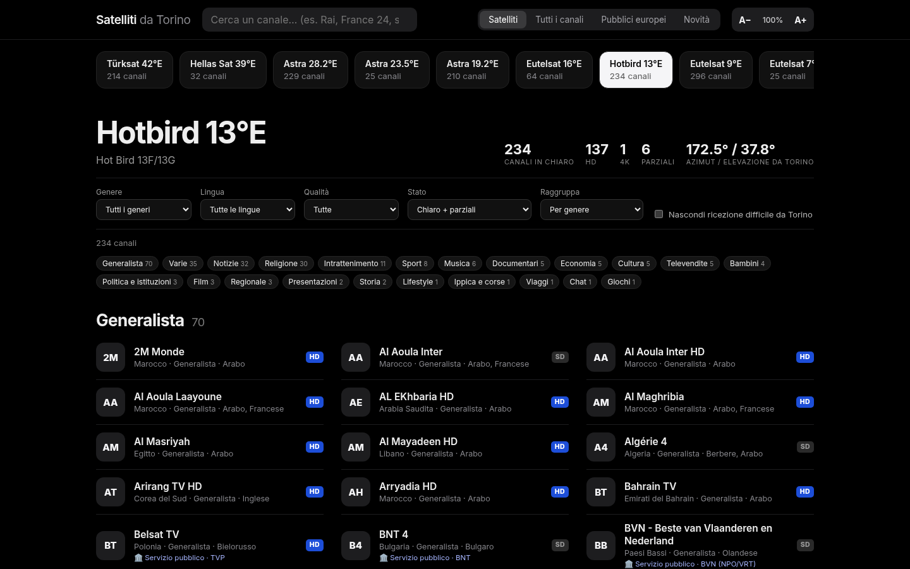
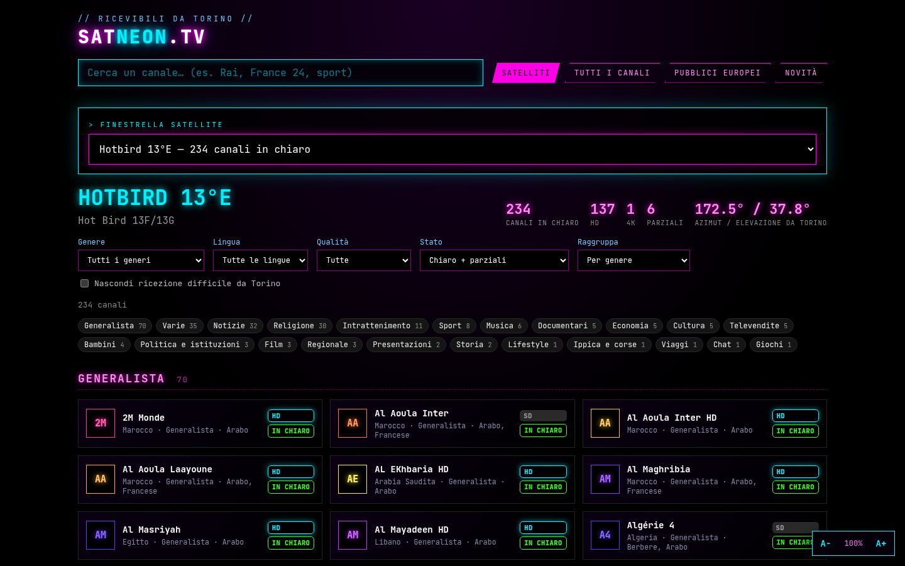
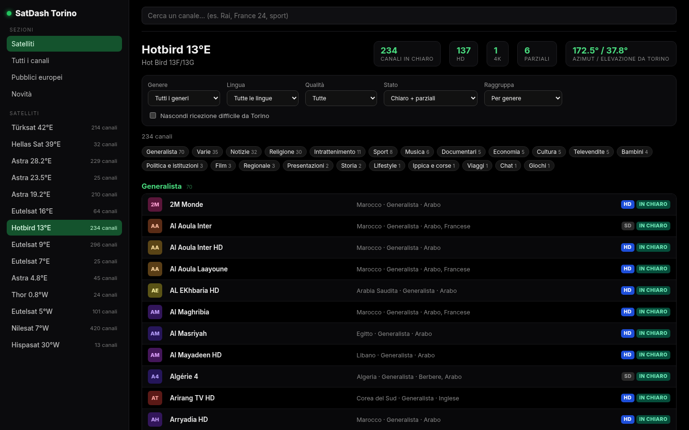
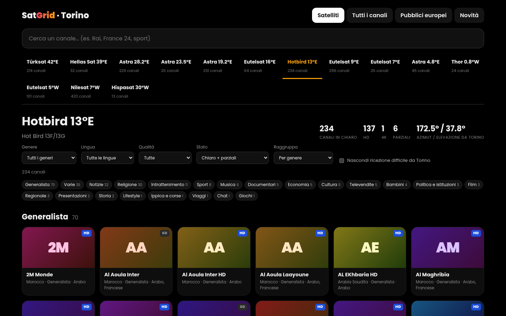
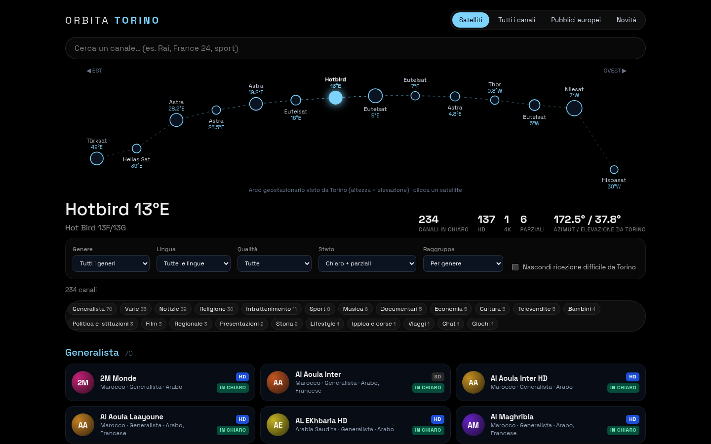
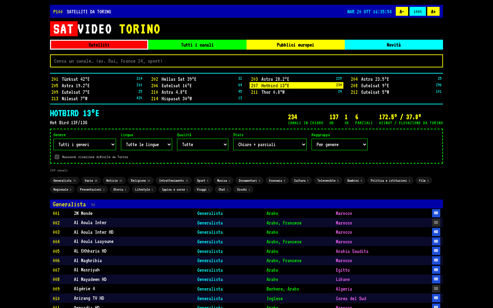
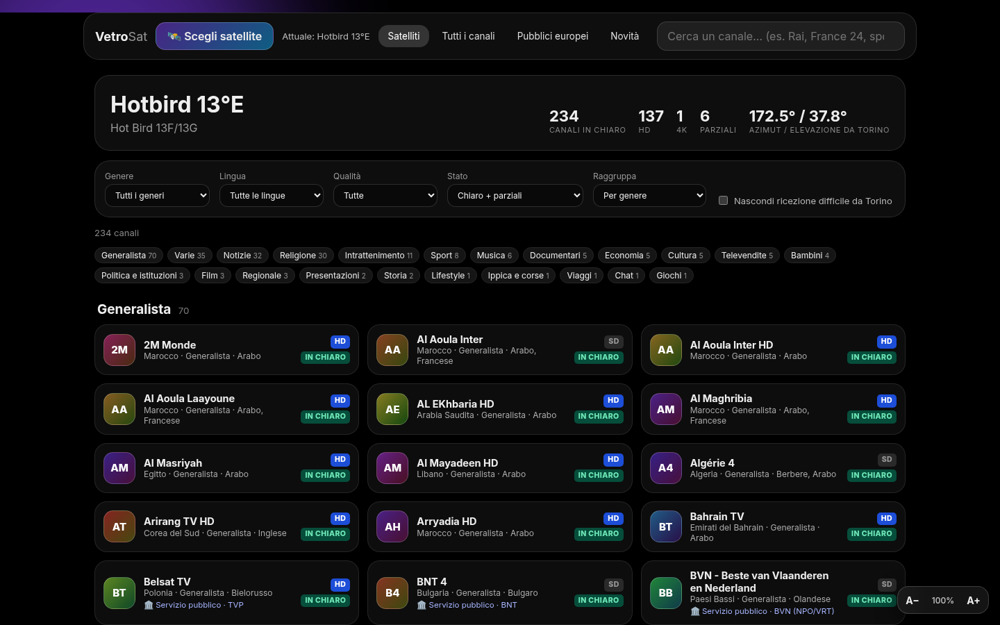

Satelliti da Torino
7 versioni dello stesso sito (stessi dati, stesse funzioni): scegli quella che ti piace di più. Ogni file funziona anche offline con doppio clic.

Minimal
Stile essenziale “Apple-like”: tipografia grande, controllo segmentato, satelliti in una barra a scorrimento.

Neon Cyberpunk
Luci al neon magenta/ciano, font monospazio, satellite scelto da una tendina “finestrella”.

Dashboard
Pannello di controllo con barra laterale: satelliti e sezioni a sinistra, filtri in alto, elenco a tabella compatta.

Griglia a schede
Griglia di grandi schede colorate con le iniziali del canale come logo, satelliti come schede in alto.

Orbitale
Tema spaziale con cielo stellato: i satelliti sono disposti sull’arco orbitale come visti da Torino, clicca un satellite per aprirne la sezione.

Guida TV / Televideo
Elenco denso stile guida TV (EPG) con colori da Televideo: righe numerate, colonne Canale/Genere/Lingua/Paese/Qualità.

Glassmorphism
Pannelli di vetro sfocato su sfondo nero con bagliori colorati; il satellite si sceglie da una finestrella a comparsa.